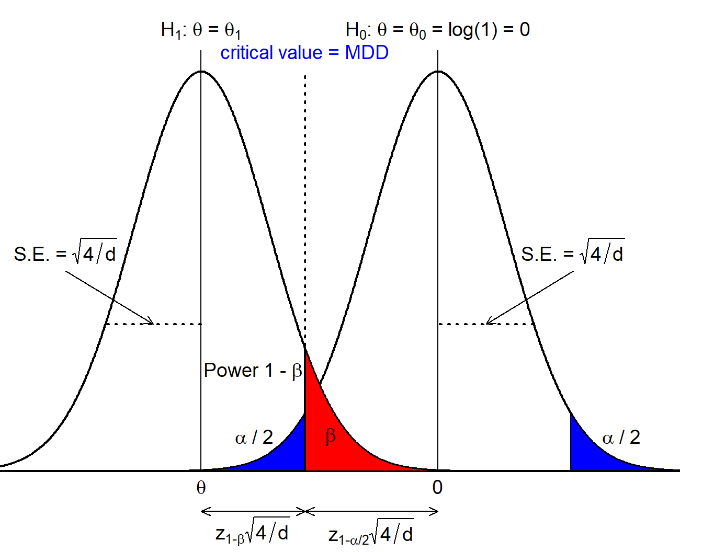

# we use rpact for some basic computations
library(rpact)Minimal detectable difference for a time-to-event endpoint in a Phase 3 clinical trial
Purpose of this document
This R markdown file accompanies this linkedin post, provides the code to reproduce computations, and much more.
Setup
Trial design
First, let us specify the basic parameters of a Phase 3 clinical trial with a time-to-event endpoint:
# probability of type I and type II error
alpha <- 0.05
beta <- 0.2
# effect size we target
hr <- 0.75
# required events for single-stage design, i.e. without interim
nevent0 <- rpact::getSampleSizeSurvival(hazardRatio = hr, sided = 2, alpha = alpha, beta = beta)
nevent <- ceiling(nevent0$maxNumberOfEvents)
nevent [1] 380So we plan a trial assuming:
- 1:1 randomization,
- no interim analyses,
- 80% power to
- detect a hazard ratio (HR) of 0.75
- using a two-sided logrank test
- with a significance level of 0.05.
The number of events needed for these assumptions is then d = 380. Assume we have run the trial and collected these 380 events events in a certain number of patients. The question is:
Question
What hazard ratio in favor of the experimental treatment do we need to observe such that we get a one-sided \(p\)-value of exactly \(\alpha / 2 = 0.025\)?
Answer
The answer to the above question is, what I call, the minimal detectable difference (MDD). It can be computed in various ways which I all describe below.
Note that we work on the log(HR) scale. This, because the estimate \(\hat \theta = \log(\widehat{\text{HR}})\) can well be approximated through a Normal distribution according to \[\begin{eqnarray*} \hat{\theta} := \log(\widehat{\text{HR}}) &=& N(\theta, 4 / d). \end{eqnarray*}\]
with \(\theta\) the true underlying log hazard ratio and \(\text{SE}(\hat{\theta}) = \sqrt{4 / d}\).
Critical value of hypothesis test on effect scale
The MDD is, simply speaking, the critical value of the hypothesis test on the scale of the effect size of interest. So, to find the answer to our question above we simply have to solve \[\begin{eqnarray*} \frac{\hat{\theta}}{\text{SE}(\hat{\theta})} &=& -q_{1 - \alpha / 2} \end{eqnarray*}\] for \(\hat \theta\), giving us \[\begin{eqnarray*} \hat \theta &=& -q_{1 - \alpha / 2} \text{SE}(\hat{\theta})\Bigr. \end{eqnarray*}\]
From this we get \(\widehat{\text{HR}} = \exp(\hat \theta)\). Let us verify this:
# compute MDD as rescaled critical value of hypothesis test:
se <- sqrt(4 / nevent)
mdd <- exp(-qnorm(1 - alpha / 2) * se)
mdd[1] 0.8178404# one-sided p-value at MDD
pnorm(log(mdd) / se)[1] 0.025Value of hazard ratio such that upper end of confidence interval is just at 1
Alternatively, exploiting the connection between hypothesis test and confidence interval, we can find the MDD as the center of a \(1 - \alpha\) confidence interval that has its upper limit exactly at a HR of 1, corresponding to a log(HR) at 0, i.e. we solve \[ \hat \theta + q_{1 - \alpha / 2} \text{SE}(\hat{\theta}) \ != \ 0 \] for \(\hat \theta\) again giving the same expression as above.
Pick alternative in sample size formula such that it is centered on the critical value
The below figure can be used to motivate derivation of a sample size formula assessing \[ H_0 \ : \ \theta = \theta_0 = 0 \ \ \text{vs.} \ \ H_1 \ : \ \theta = \theta_1 \ne \theta_0. \] The figure reveals that we precisely get a test for the MDD if we center the alternative at \(\theta_1 =\) MDD, which implies that we can compute the MDD using the usual sample size formula by choosing 50% power.

Let us again verify this: we need to solve the sample size formula of the logrank test for \(\theta\): \[\begin{eqnarray*} d &=& \frac{4(q_{1 - \alpha / 2} + q_{1 - \beta})^2}{\theta^2} \Leftrightarrow \\ \theta &=& \pm(q_{1 - \alpha / 2} + q_{1 - \beta}) \sqrt{4 / d} \ = \ \pm q_{1 - \alpha / 2} \text{SE}(\hat{\theta}). \end{eqnarray*}\] since \(q_{0.5} = 0\). So we end up with the same formula as above.
Using rpact
Finally, rpact automatically gives us the critical value on the effect scale:
nevent0$criticalValuesEffectScaleLower[1, 1][1] 0.8177Some comments
The critical value of a hypothesis test is derived assuming the null hypothesis is true. As a consequence, the MDD does not need any assumption about exponentiality or proportional hazards. Strictly speaking, an assumption about the alternative comes in through the number of events that are computed (defining \(\text{SE}(\hat{\theta})\)) making a specific assumption about a treatment effect.
Clinical implications
So, let us again recap:
- Our trial has power of 80% at an alternative of HR = 0.75. However, that is a consideration under a specific alternative hypothesis \(H_1\).
- Since the critical value of a hypothesis test is computed assuming the null hypothesis \(H_0\) is true, the above consideration does not tell us anything about for which effect size the hypothesis test is statistically significant. Rather, to answer the question about statistical significance we need the critical value of the hypothesis test (\(=q_{1 - \alpha / 2}\)) on the effect (= hazard ratio) scale. We call this effect the minimal detectable difference. Above I have illustrated several ways to compute this MDD, and in our example it amounts to 0.818.
Now, to me it is somewhat surprising that in clinical trial design focus is so much on the effect we power at, i.e. the hazard ratio of 0.75 in our example. In my opinion this carries a risk of being misinterpreted in the sense that stakeholders are of the opinion that - if the trial is statistically significant - we will indeed observe a HR of 0.75. However, that is obviously not the case: the trial will also be statistically significant for any final HR estimate in the interval \((0.75, 0.818]\). So, when designing a trial planners should not focus on a discussion of the HR we power at, but rather on the MDD and ask
Will we change clinical practice if at the end of the trial we observe a hazard ratio of 0.818?
Otherwise, if stakeholders are of the opinion to “get” 0.75 in case of a successful trial there is a risk for disappointment, and even a statistically significant but clinically irrelevant trial in case \(\hat{\theta} \in (0.75, 0.818]\).